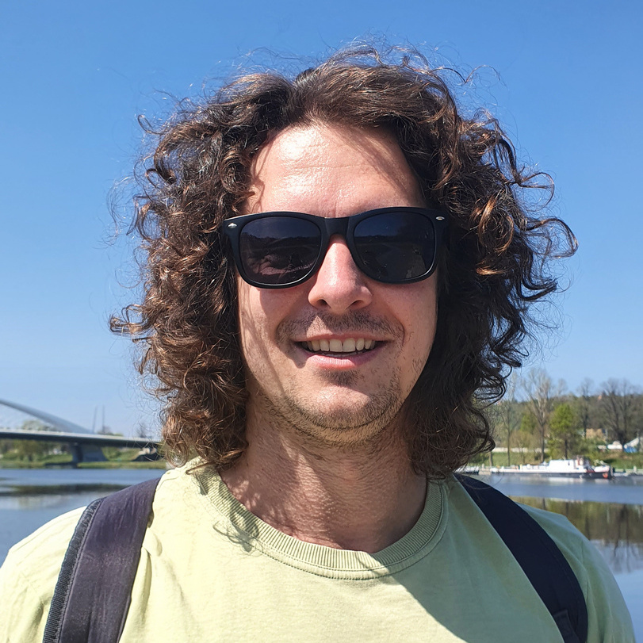

Principal Investigator
Martin Horák
Assistant Professor at the Department of Mechanics, Faculty of Civil Engineering, Czech Technical University in Prague, and Research Scientist at the Institute of Information Theory and Automation of the Czech Academy of Sciences. His research focuses on computational modeling of soft active materials and structures, mechanics of generalized continua, and the development of scientific simulation tools.
He is involved in the development of the open-source finite element solver OOFEM and leads the SOFFA ERC CZ project on soft surfaces, constitutive models, instabilities, and numerics.